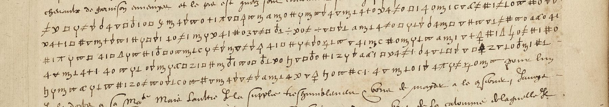

At a glanceKey from adjacent plaintext · partial (98% of the cipher)
- The letter
- Dinteville, royalist lieutenant in Champagne, to the Duke of Nevers, dated at Langres on 4 July 1592 (the date was corrected from 3 July): clear French with two cipher passages and an autograph postscript in clear.
- Where
- BnF Français 3621, no. 116, f. 130 (DECODE R9451; Gallica btv1b52524472n, view 269). DECODE calls it a “letter, with cipher and decryption”, but the image shows no decipherment.
- The cipher
- A mixed set of digits, letters and marks, roughly 400 to 450 symbols, many barred, crossed or dotted.
- How it was read
- Alex Zarco (pull request #24, 6 October 2026) rebuilt the key from the interlinear decipherment of the sibling letter f. 128, the crib found here on 21 September, and read f. 130, building on NoAutopilot’s partial key. This project verified it.
- Credit
- Solution by Alex Zarco; prior partial key by NoAutopilot.
- Still open
- 8 of 522 cipher tokens. The sections below describe the 21–24 September attempt, made before this solution, and have not yet been rewritten.
01 The letters

f. 130 (no. 116) is a clear French letter signed by Dinteville, dated de Langres le iiije Juillet 1592. Its subject in clear is the enemy’s threat to return to Châteauvillain and the town’s request to the King and Nevers for two hundred horse and two hundred foot. The cipher breaks into it twice: about four lines near the top (ll. 4–8) and six full lines in the middle (ll. 11–16), 522 cipher symbols in all. After the date comes an autograph postscript in clear, cramped and partly struck out, on the Lorraine army; the verso carries only the address. Nothing on the leaf glosses the cipher, although DECODE describes R9451 as a letter “with cipher and decryption”. The day is iiije, as the 1882 summary in the Revue de Champagne et de Brie also gives it; the “3 July” of DECODE and of the first version of this page was a misreading.
f. 128 (no. 114), two leaves earlier, is Dinteville’s letter of 1 July 1592 to the same recipient, in the same symbols. Its three and a half lines of cipher (180 symbols) carry a contemporary decipherment written above each line, and the whole letter is printed in the Revue de Champagne et de Brie t. XII (1882), p. 340.
02 The key

The key was recovered by Alex Zarco (GitHub alejandrozarco), who sent it as pull request #24 on 6 October 2026, working with an LLM. Two things opened the crib that the first attempt here had failed on (section 05):
- The marks belong to the symbols. The small crosses and strokes on some symbols, earlier taken for the decipherer’s marks, make separate cipher symbols: ∇ is a and ∇ with a rising stroke t; Δ with a tail below is a and plain Δ f; the o-shaped symbol with a cross above is s and with a plain ascender p; ψ is o and ψ with a cross below a null.
- The gloss says Gennes. The interlinear reads a gennes (Genoa), not Geneve, and the cipher spells dessendre.
With both, Zarco made a new transcription of f. 128 and f. 130 that keeps every diacritic, and the alignment of f. 128’s second line against its gloss admits exactly one key, with only the leading double bar as a null. He then valued the symbols that occur only on f. 130 from context. The system is a homophonic substitution of 46 symbols: one to three symbols for each letter, four nulls (ψ with a cross, # with a long stroke, the double bar and a joined a-loop), and two symbols that the writer used for two letters each, # for c or d and 1 for e or i, so that context decides, as it did for the decipherer of 1592. No code words for names were seen. The full table is key.tsv in the repository.
NoAutopilot had published a partial key from the same gloss in their cipher-lab repository from 3 October 2026, with word fragments of f. 130, leaving the rows for h, Δ and a stemmed zero open. Zarco reports that he found their folder only after his decipherment and his blind test; every fragment they give agrees with his text, and his key settles their three open rows.
The checks made here on 7 October 2026:
- The cipher under the f. 128 gloss and three lines of f. 130 (ll. 5, 6 and 14 at their openings) were compared with the transcription on the Gallica images, symbol for symbol. On f. 128, four tailed deltas had been written as plain Δ, so the final key gave f for a in auoir, Besançon, quarante and n’ayans; corrected, f. 128 decodes cleanly.
- The decipherment of f. 128 agrees word for word with the 1882 print, including Gennes, doiuent partir where the gloss abbreviates, and d’escorte under the blot.
- Scored on f. 130 with a French word model, the key gives −2.00 log-probability per letter; the best of 200 shuffled keys gives −4.29 (median −5.37). The key fixed on f. 128 alone, before any value was taken from f. 130, already gives 71% of f. 130 in words. A second transcription of f. 130, made blind from crops and a shape legend, agrees with the first on 95.6% of symbols and decodes to 97.3% of the same text. The statistical validation of 11 October (
docs/_validate.py) passes: z = 7.6 against random keys and 25.2 against keys fitted to the shuffled ciphertext.
03 f. 130, 4 July

The two cipher passages in their clear context, in the writer’s spelling. Clear text is in ⟨ ⟩; […] marks the four open symbols of line 4, [?] an uncertain word, [?word] a doubtful one, and square brackets round letters mark letters supplied.
⟨…ce que J’ay eu auiourdhuy aduis de plusieurs endroitz que l’ennemy [?] faict estat dy retourner et⟩ l’emporter, […] il n’y estoit pourveu, qui me faict les y renvoier avec de la pouldre. ⟨Vous Iugerez aussi s’il vous plaist, Monseigneur, que⟩ je demeure seul ici avec les habitans et ⟨que la[rmée] … Lorrains [?] se fortiffie de ce qui estoit du coste de Strasbourg⟩ et, retournant a moi, il me seroit malaisé d’y conserver ceste place en l’obeissance qu’[?elle] y est. ⟨Messieurs de la Ville supplient tres humblement le Roy et vous d’y placer deux cens chevaulx et deux cens hommes de pied…⟩
⟨…Il y a plus de cinq cens chevaulx de garnison ennemye et le pais est […] soubz contributions sur ce qu[i …]⟩ si les forces n’y sont placées, oultre le hasart que court la ville, il ne se leuera un denier de tailles. D’aultre costé, l’en y voi[t] le dedans si bien basti qu’il ne soit plus a craindre que le dehors; les forces serviront tant a les contenir a leur devoir que a la deffence de la ville. Le Roi et vous m’excuserez si je [?pass] de mot, que [?] s’il ne plaist a Sa Maiesté d’y pourvoir, de m’en retirer, d’aultant qu’il y a a perdre la vie et l’honneur ⟨comme [?] luy. Je la doibs a sa Ma(jes)te…⟩
In English: the enemy means to come back and carry Châteauvillain unless it is provided for, which is why Dinteville is sending the men back there with powder; he is left alone in Langres with the townspeople, and if the Lorraine army turns on him he can hardly keep the town in its obedience. Without troops, besides the danger to the town, not a penny of taille will be raised; the troops would serve as much to keep the inhabitants to their duty as to defend the walls. If it does not please the King to provide, he asks leave to withdraw, since life and honour are at stake. The full translation is under Full texts below.
Each cipher run continues the grammar of the clear text on either side (retourner et | l’emporter, que | je demeure, l’honneur | comme luy), and the cipher gives the reasons behind the request the letter makes in clear. Of the 522 cipher symbols, 514 give sense (98.5%), none emended; counted by words of the reading, 95.5% read as sense. The Revue de Champagne of 1882 summarises this letter from its clear text only and marks the rest “En chiffres”; apart from NoAutopilot’s fragments, no earlier decipherment of these passages was found.
04 f. 128, 1 July
The cipher passage of the letter of 1 July, with the clear lead-in in ⟨ ⟩ as the print summarises it:
⟨…[un gentilhomme de M. de Gondy venant de Florence]⟩ m’a dit auoir veu dessendre a Gennes deus millions d’or d’Espaigne. Il y a laissé a Besançon quarante cinq mulets chargés qui doiuent partir dans trois jours et prendre le chemin de Vesou[l], n’ayans que cent chevaux d’escort[e] [blot]
A gentleman of M. de Gondi, coming from Florence, saw two million in Spanish gold unloaded at Genoa; forty-five laden mules left at Besançon are to set out in three days by the road to Vesoul, with only a hundred horse as escort. This is Spanish money on its way up through Franche-Comté. The text builds coherent sentences, but by words 93.2% read as sense, under the 95% that the project counts as complete: the opening words are the print’s summary of the clear lead-in, which has not been transcribed here, and the last letters of Vesoul and escorte lie under an ink blot.
05 First attempt
The first session here, on 21 September 2026, found the volume on Gallica, established that f. 130 carries no decipherment, and found the f. 128 crib two leaves earlier. It then transcribed 50 symbols of f. 128’s second cipher line by eye and searched (align.py) for a key of one symbol per letter, homophones allowed, with up to three null types, against the gloss read as avoir veu d’ascendre a Geneve deux millions d’or d’Espaigne. No key fit: auoir sat cleanly over the first symbols, but α then had to stand for both o and d. The session concluded that the cipher probably held code symbols for words and closed the target as not deciphered.
Both inputs were wrong. The crosses and strokes had been merged into their base symbols, which made pairs such as ψ and ψ+ look like one symbol with two values, and the gloss had been taken as Geneve and d’ascendre. Zarco’s bourdeau_test.py re-runs the same search: with the marks merged or the old gloss it finds no key; with the marks kept and the gloss read dessendre … gennes it finds exactly one. The search itself was sound; the transcription was not.
06 What remains
- f. 130, line 4: the four symbols after l’emporter (the key gives ? i u s, perhaps ou s’il or puis). Blocker: the first symbol is unclear on the image.
- f. 130, line 7: two symbols in qu’[?elle] y est. Blocker: the symbols are unclear on the image.
- f. 130, line 14: the last symbol of pass[?] and the symbol after que. Blocker: the shapes are doubtful and no key value fits.
- f. 128: the endings of Vesou[l] and escort[e], under an ink blot (the print supplies both), and the clear lead-in, given here from the print’s summary.
- The clear text of f. 130 has uncertain words throughout, and the autograph postscript is legible only in fragments. These are clear-text questions; a better image or the original would settle them.
Checked for more material: ff. 127–131 of the volume; Tomokiyo’s catalogue of the Nevers ciphers, which has no Dinteville key; the 1882 print. The DECODE record is due a correction: R9451 has no decipherment on the leaf, the date is 4 July, and the key source is f. 128.
Full texts
The transcription and the decryption of every document on this page, so that the reading can be used and checked. Short files are shown here; all are in the repository.
f. 130 (no. 116), Dinteville to Nevers, Langres, 4 July 1592
Dinteville, at Langres, writes to the Duke of Nevers that the enemy means to return and take Châteauvillain, that he is left alone in Langres with the townspeople while the Lorraine army fortifies itself, and that without troops no taille can be raised; he asks to withdraw if the King does not provide for it. The cipher passages give the reasons he did not write in clear; 8 signs are open.
Transcription
# BnF fr. 3621 f. 130r (Gallica btv1b52524472n view 269, deskewed -2.6 deg), Dinteville -> Nevers, Langres 3/4 Jul 1592. # Sign transcription by eye, 2026-10-06; tokens as in f128_v2.txt plus: D+ = delta with cross/tail below (a) vs D plain (f); # & = c-hook (o); 2 = z-shaped two (l); Q| = square with ascender; xi = xi-shaped z (L07); Nm = N-like sign (L06); sf = long-s/f (L13). # M = m with z-tail (u/v; possibly t where noted M?). Clear text between passages in the .clear lines. L03.clear ... dy retourner et L03 4 1 z h Y W L04 Vt o c &? Px M Q| 1 + R Px o 6s Vt & T y3 6p Y al c M 1 al a M Px 2 1 D V T # y3 4 o Q Px W 1 f al Y T 1 c V M o # # 1 + D+ h Y al + # c 1 L05.clear aussi si bon plaist Monseigneur que L05 #| Px aP o # 1 2 o al c 1 Q o M 4 Px # T V M 1 # + o 6s pi V % T y3 V f Q 1 y3 L06.clear qui l'armee lorraine se fortifie de ce qui estoit du coste de Strasbourg L06 aP o Vt #| W 1 y3 Y M c f V R Vt V 2 Y T Px 4 2 o Q 1 W & T Vt Nm V + D+ T Q o # 1 # L07 & f Q o W M 1 c # o Q Vt 1 h 4 V xi 1 o f 4 Y % o T Q 6s V f # o a al M o 4 + 1 o Q Vt L07.clear Messieurs de la ville supplient tres humblement ... qu'ils sont entretenus sur ce qui se souloit leuer sy L10 Q T 4 1 6s D Y W # o Q L11 f Px Q Y f Vt 6p 4 V Q 6s 1 o Q & M 4 Vt W o + 1 pi V Q D+ W y3 a M o # Y M W Vt 4 V M T 4 + o Px 4 f o Q 1 4 o M 1 c V al f # 1 f T o W # o Vt V L12 Px 4 + 1 Q # V M + Vt W 1 # Y Q Vt 1 + o f 1 M Y Px 4 1 # o 3 V f Q 6s 1 % Px o f % V Q Vt T a M T 4 f o Q Y T Vt 6p 4 M Q V # W V T f # W o a al o 4 1 L13 # 1 pi Y W Q 4 1 Q D Y W # 1 6s Q o W M T c Y f Vt y3 V f Vt D+ 4 1 Q # Y f Vt o R T W V 4 1 M c # o M Y T W a M 1 V + D+ # 1 D sf o f # 1 # o L14 4 V M T 4 + 1. 4 o W Y T o Vt M Y al Q z 1 Q # M 6s 1 W o Q 6s 1 Px o h V Q 6s c # 1 z Y Vt a al 1 D+ Q Px 4 f 1. 6p 4 V T Q Vt V Q D+ z V T o 6s M? 1 # T L15 h Y M W al Y T W # 1 2 o f W o Vt T c o W # V M 4 Vt V f Vt a M 1 4 Px V D+ h o W # c 1. 4 V M T o 1 Vt 4 pi Y f R o M W L15.clear pour luy
Transcription
# BnF fr. 3621 f. 130r (no. 116), Dinteville to the duc de Nevers, Langres, July 1592: clear text. # Diplomatic transcription from Gallica btv1b52524472n view 269 (line crops, deskewed), 6 Oct 2026, by an agent working # separately from the decipherment. # Conventions: # original spelling; (..) = expansion of an abbreviation; [?] = uncertain word; [...] = illegible. # [CIPHER ~n] = cipher run with its approximate sign count, read in f130_signs.txt / reading_f130.tsv. # Line numbers are page lines, not the L03-L15 cipher-line labels of f130_signs.txt. # Lines 35-45 (autograph postscript) are cramped and partly struck; only fragments are readable. 01 Monseigneur 02 Ce que Jauoye enuoye de forces a Chasteauuillain estant repartie plustost que fault[?] estre[?] Il[?] nay[?] feust estre[?] le besoing 03 L(ett)re[?] aiant[?] vous[?] [...] auant que de scauoir les particul(ari)tez[?] Comme aussi lon ma dict que le Baron de S(ain)t Remy[?] c'est[?] 04 sorti Cela faict a ce que Jay eu auiourdhuy aduis de plusieurs endroitz que lennemy[?] faict estat dy retourner et [CIPHER ~7] 05 [CIPHER ~65] vous Iugerez[?] 06 aussi si vous plaist Monseigneur Que [CIPHER ~38] que la[?] [...] Lorrains[?] 07 se fortiffie[?] de ce qui estoit[?] du coste de Strasbourg [CIPHER ~42] 08 [CIPHER ~44] Messieurs de la Vill(e) supplient tres humblement 09 le Roy et vous d'y placer deux cens chevaulx et deux cens hommes de pied d'aultant qu'il ne reste plus que le reste de 10 Chasteauuillain quelle[?] ne soit bloquee par tout et a quatre ou cinq lieues a la ronde Il y a plus de cinq cens 11 chevaulx de garnison ennemye et le pais est [...] soubz[?] contributions sur ce qu[...] [...] [...] [CIPHER ~12] 12 [CIPHER ~70] 13 [CIPHER ~74] 14 [CIPHER ~70] 15 [CIPHER ~74] 16 [CIPHER ~60] comme[?] luy 17 Je la doibs[?] a sa Ma(jes)te Mais[?] [...] de la supplier tres humblement vous[?] de mander a [...] Jamais[?] 18 faict arrester [...] le Comte de Chasteauuillain pour se Iustiffier pardeuant vous de la calomnie delaquelle Je[?] 19 vous taxe M(onsieu)r de Tauannes Praseins[?] et moy pour vne l(ett)re dont Je vous ay enuoye coppie par Cuisy 20 Comme aussi de celle de Madame d'Orisy[?] Mais comme Jay sceu[?] q(ue) lennemy faisoit semblant de retourner 21 aux[?] Chasteauuillain Jay mande au[?] Comte q(ue) sil y vouloit aller pour ayder a la conseruation q(u'i)l le pouuoit 22 faire Je ne scay sil seschauffera plus que les aultres fois Car tout aussitost quil a veu[?] tourner[?] lennemy[?] 23 Il sen est[?] alle La place estoit si bien munie que sans la poudre que Je y auoye enuoye elle neust tenu[?] 24 resiste et y auoit[?] au bout du siege si peu de viures que Je suis oblige[?] d'en[?] [...] la quantite Nous[?] esprouuons[?] 25 M(onsieu)r de la Ville[?] et moy au Roy suiuant vos commandemens chose[?] q(ue) nous [...] asseurions bien q(ue) noz[?] biens[?] aurions[?] 26 pour le faire [...] [...] Vous[?] [...] [...] prouince Monseigneur attendant quil ait pleu au Roy 27 ou aurons[?] pourueu a la garnison necessaire a ceste place Sil vous plaisoit y enuoyer les compagnies 28 du S(ieu)r de S(ain)t Estienne et luy mesme et celle du S(ieu)r de Villeneufue[?] Comme Je vous ay supplie treshumblement 29 dautant q(ue) Brandon[?] arriuant ycy[?] [...] ma dict q(ue) vng sien amy [...] la asseure que pour certain 30 le dessaing de lEspagnol et du [...] est dattaquer ou Chaalons ou Langres et assembler toutes leurs forces 31 a cest effect [...] vous scauez[?] le lieu sera bien asseure par vostre presence Cest pourquoy si les forces du Roy ne 32 viennent deca Je croy qu(i)lz pourroient tenter[?] leur effort [...] vous y pouruoyrez si vous plaist Monsieur de 33 Lorraine a enuoye secrettement au Duc de Parme Je croy[?] pour[?] ce dessaing Je prie Dieu vous donner 34 Monseigneur en parfaicte sante longue vie De Langres le vj(e)[?] Juillet 1592 35 Monseigneur ce matin Jay sceu [...] Larmee Lorr(ai)ne estoit[?] [...] [...] fus[?] assemblee et tiree[?] a [...] lun[?] 36 [...] pour se Jetter es garnisons prochaines de Toul[?] et[?] Verdun[?] ou pour se Joindre a celle d'Espagne 38 [...] apres[...] [...] en aucuns[?] [...] [...] occasions[?] vous[?] [...] [...] de beaucoup[?] [...] 39 [...] Jugez[?] le demeurement[?] [...] [...] a donne[?] [...] [...] [...] la fin[?] Je vous supplie M(onseigneu)r[?] 40 [...] [...] La Justice[?] de la [...] [...] de S(ain)t [...] de S(ain)t Estienne [...] la si bien [...] et [...] 41 [...] de fidelite que Je masseure[?] [...] ce que vous aurez[?] [...] la [...] [...] on a [...] 42 [...] contraire estrange[?] et vous suppl[ie][?] [...] [...] a Jamais [...] 43 [...] [...] frere[?] de Chaumont [...] tres humble et obeissant seruiteur 44 [...] Albanois[?] entre les garnisons[?] 45 [...] p(ou)r[?] faciliter[?] [...] [...] D Dinteuille [signature] # Date: the day numeral (l. 34) is uncertain here. The BnF finding aid and Revue de Champagne XII (1882) p. 341 give # 4 July 1592; Bourdeau read iij (3 July).
Decryption
# f. 130 (no. 116, 4 July 1592): decryption in context, copied verbatim from SOLUTION.md (section 'f. 130'). The letter-per-token reading is reading_f130.tsv. ## f. 130 (no. 116, "IIIIe juillet 1592") The cipher is given in bold. The clear text is from `clear_f130.txt`, a separate full transcription of the leaf; [?] marks words uncertain there. Original spelling is kept; ? in the cipher marks open tokens. The clear text says Langres asks for 200 horse and 200 foot, and Châteauvillain is blockaded. The cipher gives the reasons Dinteville did not write in clear. **Passage 1 (ll. 4–8).** …ce que J'ay eu auiourdhuy aduis de plusieurs endroitz que lennemy[?] faict estat dy retourner et **l'emporter, ???? il n'y estoit pourveu, qui me faict les y renvoier avec de la pouldre.** vous Iugerez[?] / aussi si vous plaist Monseigneur que **je demeure seul ici avec les habitans et** que la[rmée] … Lorrains[?] se fortiffie de ce qui estoit du coste de Strasbourg **et, retournant a moi, il me seroit malaisé d'y conserver ceste place en l'obeissance qu'[?]elle y est.** Messieurs de la Ville supplient tres humblement le Roy et vous d'y placer deux cens chevaulx et deux cens hommes de pied… **Passage 2 (ll. 11–16).** …Il y a plus de cinq cens chevaulx de garnison ennemye et le pais est […] soubz contributions sur ce qu[i …] **si les forces n'y sont placées, oultre le hasart que court la ville, il ne se leuera un denier de tailles. D'aultre costé, l'en y voi[t] le dedans si bien basti qu'il ne soit plus a craindre que le dehors; les forces serviront tant a les contenir a leur devoir que a la deffence de la ville. Le Roi et vous m'excuserez si je pass[?] de mot, que [?] s'il ne plaist a Sa Maiesté d'y pourvoir, de m'en retirer, d'aultant qu'il y a a perdre la vie et l'honneur** comme[?] luy. / Je la doibs a sa Ma(jes)te… **Joins.** Every cipher run continues the grammar of the clear text on each side, as transcribed independently: - "et | l'emporter" - "que | je demeure" - "habitans et | que la[rmée]" - "Strasbourg | et retournant" - "qu'elle est | Messieurs de la Ville" - "l'honneur | comme luy. Je la doibs a sa Majesté" The request in clear for "deux cens chevaulx et deux cens hommes de pied" is picked up in cipher as "si les forces n'y sont placées". **English.** Passage 1: …[the enemy] means to come back and carry the place, [unless?] it were provided for, which is why I am sending them back there with powder. … if you please, my Lord, [consider] that I am left alone here with the townspeople, that the Lorraine army is fortifying itself on the Strasbourg side, and that if it turns back on me, it would be hard for me to keep this place in the obedience it is in now. Passage 2: If troops are not stationed here, then besides the danger the town runs, not a penny of taille will be raised. On the other hand, one sees the inside so well built that only the outside is to be feared; the troops will serve as much to keep them to their duty as to defend the town. The King and you will forgive me if I speak bluntly: if it does not please His Majesty to provide for it, [I ask] to withdraw, since there is life and honour to be lost…
Decryption
# One character per cipher token of f130.txt: plaintext letter, '-' = null, '?' = open. Spaces are ignored (word division). L03 lempor L04 ter ???? il nyestoit pourveu qui me faict les y renvoier avec de la pouldre L05 -j-e demeure seul ici avec les habitans et L06 -et- retournant amoi il me seroit malaise dy c L07 onserver ceste place en lobeissance qu?ell?est L10 si les forces L11 ny sont plassees oultre le hasart que court la ville il ne se leuera un denier de ta L12 illes daultre coste len y voi le dedans si bien basti quil ne soit plus a craindre que le L13 dehors les forces seruiront tant a les contenir a leur deuoir que a la deffence de L14 la ville le roi et vous mexcuserez si je pass? de mot que ? sil ne plaist a sa maieste dy L15 pouruoir de men retirer daultant quil y a a perdre la vie et lhonneur
Reading
<!-- Reading of BnF fr. 3621 f. 130 (no. 116, 4 July 1592) (Claude Opus 5.5, 23 Oct 2026): the two cipher passages in their clear context as given in texts/f130_decryption.md (from SOLUTION.md; the clear text from clear_f130.txt, the cipher from reading_f130.tsv). Cipher in plain type, clear in ⟨ ⟩; "…" = clear text not given there; [?] = uncertain word, [?word] doubtful, [….] the four open cipher tokens ("????"); "la[rmée]" letters supplied. Original spelling kept. -->
# Dinteville to [the Duke of Nevers], Langres, 4 July 1592 (BnF fr. 3621 f. 130, no. 116)
## Reading
⟨…ce que J'ay eu auiourdhuy aduis de plusieurs endroitz que l'ennemy [?] faict estat dy retourner et⟩ l'emporter, […]
il n'y estoit pourveu, qui me faict les y renvoier avec de la pouldre. ⟨Vous Iugerez aussi s'il vous plaist,
Monseigneur, que⟩ je demeure seul ici avec les habitans et ⟨que la[rmée] … Lorrains [?] se fortiffie de ce qui estoit
du coste de Strasbourg⟩ et, retournant a moi, il me seroit malaisé d'y conserver ceste place en l'obeissance qu'[?elle]
y est. ⟨Messieurs de la Ville supplient tres humblement le Roy et vous d'y placer deux cens chevaulx et deux cens hommes
de pied…⟩
⟨…Il y a plus de cinq cens chevaulx de garnison ennemye et le pais est […] soubz contributions sur ce qu[i …]⟩ si les
forces n'y sont placées, oultre le hasart que court la ville, il ne se leuera un denier de tailles. D'aultre costé, l'en
y voi[t] le dedans si bien basti qu'il ne soit plus a craindre que le dehors; les forces serviront tant a les contenir a
leur devoir que a la deffence de la ville. Le Roi et vous m'excuserez si je [?pass] de mot, que [?] s'il ne plaist a Sa
Maiesté d'y pourvoir, de m'en retirer, d'aultant qu'il y a a perdre la vie et l'honneur ⟨comme [?] luy. Je la doibs a
sa Ma(jes)te…⟩Translation
<!-- English translation of texts/f130_reading.md (Claude Opus 5.5, 23 Oct 2026), with the same holes; clear text in ⟨ ⟩. --> # Dinteville to [the Duke of Nevers], Langres, 4 July 1592 (BnF fr. 3621 f. 130, no. 116): English translation ⟨…because I have had word today from several quarters that the enemy [?] intends to come back and⟩ carry it, […] it were not provided for, which makes me send them back there with powder. ⟨You will also judge, if you please, Monseigneur, that⟩ I am left alone here with the townspeople, and ⟨that the [army] … of Lorraine [?] is strengthening itself with what was on the Strasbourg side,⟩ and, if it turned back on me, it would be hard for me to keep this place in the obedience in which [?it] is. ⟨The gentlemen of the town most humbly beg the King and you to station two hundred horse and two hundred foot there…⟩ ⟨…There are more than five hundred horse of enemy garrison, and the country is […] under contributions on wh[at …]⟩ if the troops are not stationed here, besides the danger the town runs, not a penny of taille will be raised. On the other hand, one sees the inside so well built that the outside is no longer the only thing to fear; the troops will serve as much to keep them to their duty as to defend the town. The King and you will excuse me if I [?say it in a word]: that [?], if it does not please His Majesty to provide for it, [I ask] to withdraw from it, since there is life and honour to be lost ⟨as [?] he. I owe it to His Majesty…⟩
f. 128 (no. 114), Dinteville to Nevers, Langres, 1 July 1592 read in part
A gentleman of M. de Gondy coming from Florence reports two million in Spanish gold landed at Genoa, with forty-five laden mules left at Besançon to take the road to Vesoul under an escort of a hundred horse. The interlinear decipherment on this leaf is the key source; the plaintext is printed in Revue de Champagne et de Brie t. XII, p. 340.
Builds coherent sentences, but under the read bar of 95% of words read as sense (93% here); the holes are marked in the reading.
Transcription
# BnF fr. 3621 f. 128r (Gallica btv1b52524472n view 265), Dinteville -> Nevers, Langres 1 Jul 1592. # Diacritic-aware sign transcription, 2026-10-06. Diacritics are part of the sign: # Vt = inverted triangle with vertical stroke above (t) vs V plain (a); 6s = o-with-cross above (s) vs 6p = o with ascender (p); # Y+ = psi with cross below (null) vs Y (o); M = m with z-tail (u/v) vs y3 = yogh-like z (t); #| = # with ascender. # 2026-10-07 (review of PR #24): plain D written for the tailed delta corrected to D+ (a) in all four places, checked on the image (Besançon, quarante, n'ayans, auoir). A +. z V Y+ aP 3 T y3 C II D+ al Y Px W M o al # 1. Q 6s o f 3 c 1. D+ 9 1. f R o 6s # o M Q z Px 4 + T & f Q 3 Y W # o Q 6p V T 9 R o C2 Y+ #| V E % o 6s D+ f # Y R a al V W D+ f Vt o # 1 f a z M 4 o Vt Q # pi V W 9 1. Q a M T # Y Px M o f y3 h V c Vt T c # B f P2 n W Y Px Q G 1 & M W 6s o Vt 6p W 1. f 3 c o 4 1 # pi 1 z Px f # 1. M o 6s Y al f V 1 D+ R 6s a al 1. # o f Vt # pi 1 M V al Q 3 1. 6s # Y c n 1.
Decryption
# f. 128 (no. 114, 1 July 1592): decryption. The normalised reading is copied verbatim from SOLUTION.md (section "f. 128 (no. 114, 1 Jul 1592), read in full with this key"); the raw letter stream below is the output of `scripts/decode.py ../f128_signs.txt ../key.tsv`, run 22 Oct 2026 ((x/y) = the two values of an ambiguous sign, resolved by context in the reading). > …[un gentilhomme de M. de Gondy venant de Florence] m'a dit auoir veu dessendre a Gennes deus millions d'or > d'Espaigne. Il y a laissé a Besançon quarante cinq mulets chargés qui doiuent partir dans trois jours et prendre le > chemin de Vesou[l], n'ayans que cent chevaux d'escort[e] (ink blot) ``` A: madit C: auoirueu(c/d)essendreagennes(c/d)eusmillionsdor(c/d)espaigne C2: a E: besan(c/d)onquarante(c/d)(i/e)nqmulets(c/d)hargesqui(c/d)oiuentpartir(c/d)anstrois G: (i/e)oursetprendrel(i/e)(c/d)h(i/e)min(c/d)euesouna(i/e)ansque(c/d)ent(c/d)h(i/e)uausdes(c/d)orte ```
Reading
<!-- Reading of BnF fr. 3621 f. 128 (no. 114, 1 July 1592) (Claude Opus 5.5, 23 Oct 2026): the normalised reading in texts/f128_decryption.md (from SOLUTION.md, read in full with key.tsv), with its clear lead-in (in ⟨ ⟩, summarised there in brackets); the ink blot at the end is kept as [blot]. Spelling as the key gives it. Only this cipher passage is in the repository. --> # Dinteville, 1 July 1592 (BnF fr. 3621 f. 128, no. 114): the cipher passage ## Reading ⟨…[un gentilhomme de M. de Gondy venant de Florence]⟩ m'a dit auoir veu dessendre a Gennes deus millions d'or d'Espaigne. Il y a laissé a Besançon quarante cinq mulets chargés qui doiuent partir dans trois jours et prendre le chemin de Vesou[l], n'ayans que cent chevaux d'escort[e] [blot]
Translation
<!-- English translation of texts/f128_reading.md (Claude Opus 5.5, 23 Oct 2026). --> # Dinteville, 1 July 1592 (BnF fr. 3621 f. 128, no. 114): the cipher passage, English translation ⟨…[a gentleman of Monsieur de Gondi coming from Florence]⟩ told me that he saw two million in Spanish gold unloaded at Genoa. He left at Besançon forty-five loaded mules, which are to leave in three days and take the road to Vesoul, having only a hundred horse as escort [blot]
07 Sources
- BnF Français 3621, Gallica view 269 (f. 130r) and view 265 (f. 128r).
- DECODE R9451.
- Alex Zarco, pull request #24 (6 October 2026): transcriptions, key, decipherment and the control scripts, in
SOLUTION.mdandscripts/. - NoAutopilot, cipher-lab,
ciphers/fr3621-dinteville-1592/: the earlier partial key and word fragments of f. 130. - Revue de Champagne et de Brie t. XII (1882), pp. 340–341 (1889 reprint on the Internet Archive, revuedechampagne12pariuoft): the letter of 1 July in full, the letter of 4 July summarised from its clear text.
- S. Tomokiyo, Catalogue of Ciphers (Mainly Related to Duke of Nevers), cryptiana. It has no Dinteville key.
Notes, profile, key, transcriptions and scripts are in targets/dinteville1592/.